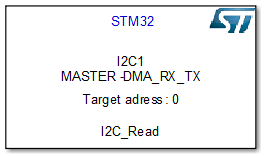
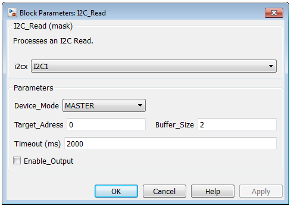
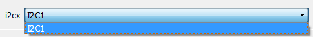
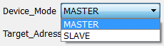
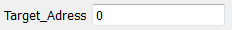
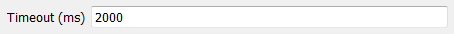
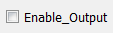
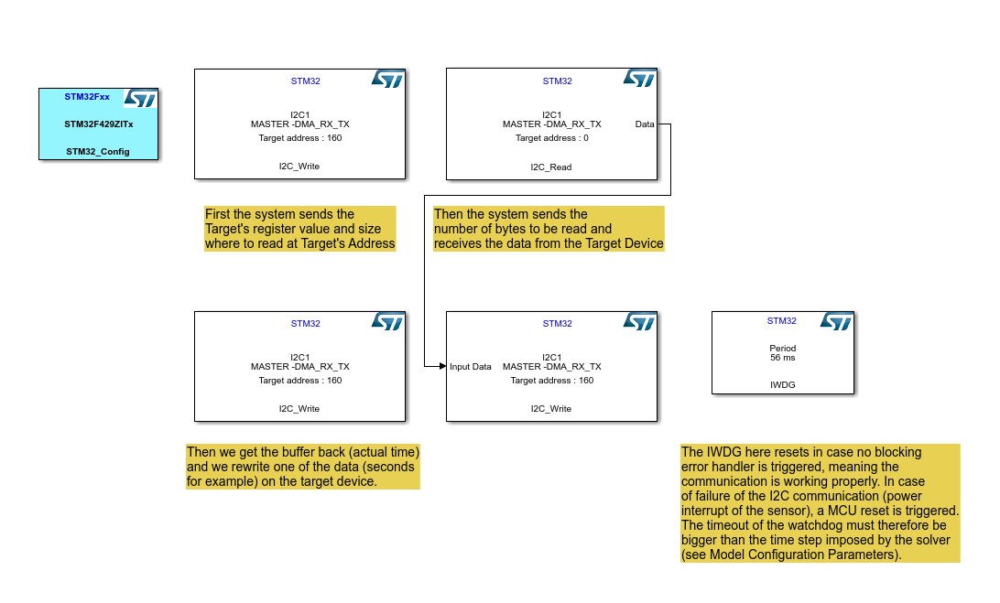
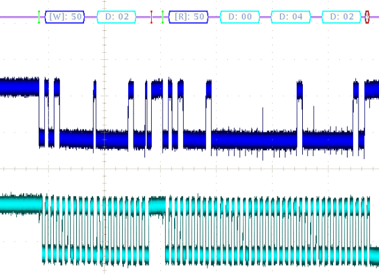
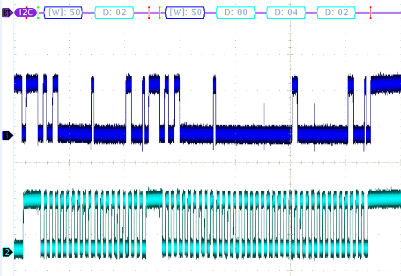

I2C Read
Model used to generate an I2C receive procedure by an STM32 MCU, based on the HAL library.
Contents
S-Function
Nb Input: 0
Nb Output: 1

Displayed on the model :
- I2Cx : Name of the I2C channel used.
- MASTER/SLAVE : Mode of the device.
- IT/DMA_RX,DMA_TX,DMA_RX_TX/POLLING : Data management of the IP
- Target_Adress : Address of the target/source in decimal format
- S Function name : Model Name
I2C Read Block Interface
Main interface of the I2C_Read model.

I2C Name
Pop up list where available I2C channel configured by STM32CubeMX are displayed.

I2C Mode
Pop up list where I2C mode is configurable.

Target Address
Available on the Data sheet on the interfaced sensor, or configured by software when two MCU are interfaced, the Target Address needs to be sent to the target, or known by the source.

IMPORTANT : Target Address can be stored in decimal format or hexadecimal format. In the latter case, it is converted and displayed into decimal format for compatibility purpose.
Buffer Size
This value must fit exactly the size of the buffer to be read.
IMPORTANT : The buffer size parameter is in integer format.
Timeout
The timeout is set by the user depending on the type of sensor used in the application.

IMPORTANT : The timeout is in integer format, and in milliseconds.
Enable Output
This option allows the user to send the read buffer towards another buffer for data to be processed afterwards.

IMPORTANT : The compatibility between an I2C read and I2C write buffers is met. (see the example below)
Example using DMA in both TX and RX mode
This example is based on STM32F429i Discovery Kit and a STM32CubeMX configuration file available in the example folder. It is also given in the I2C_Write model help file. The sensor used here for test/debugging purposes is a MikroE RTC CLICK which integrates a PCF8583P,which is a a clock and calendar chip, based on a 2048 bit static CMOS1 RAM organized as 256 words by 8 bits. The ref. manual can be downloaded freely here.

IMPORTANT :
- The I2C_Read and I2C_Write model/S-Functions/Procedures are functions to be considered as basic write/read procedures respecting the i2c norm. It is to say that the user will have to design a model including several I2C write and read models in order to respect the protocol imposed by the sensor used in the application, as shown in this example.
- This example implies a 4-wire connection between the board and the sensor, where GND, 3.3V, SDA and SCL from the chip are respectively connected to GND, 3V, PB9 and PB6 on the STM32F429i Discovery Kit as configured by STM32CubeMX.
- In order to have the blocksets processed in the right order, you must set up priorities for each block decreasingly (except for the configuration block).
Click to open example F4_I2C_Master_IWDG
This example reads the time from the sensor, et sends it back as a write on the sensor. The protocol, as explained in the ref. manual of the sensor is as followed :
- First the target address is sent, followed by the target register we want to read from. The I2C then reads the data sent from the target device. The buffer is redirected from the read buffer to the write buffer.
- Then a first write sends the target address and the target register we want to write at, and a second write operation sends the buffer with the actual time. Note that in this case, when a zero is written in at the address of the seconds, it is considered a reset at this address, so the clock does not continue to increment.
- This example is only for demonstration, and can not be taken into account for optimal applications. Another example delivered with the WWDG module library is based on this example, but with the use of a watchdog.
Results and performance
This part is giving the results obtained on the oscilloscope with this example, in order to give a basis for debugging further applications using this library.
First transmission (Read from 0xA0 at 0x02)

Second transmission (Write to 0xA0 at 0x02)
